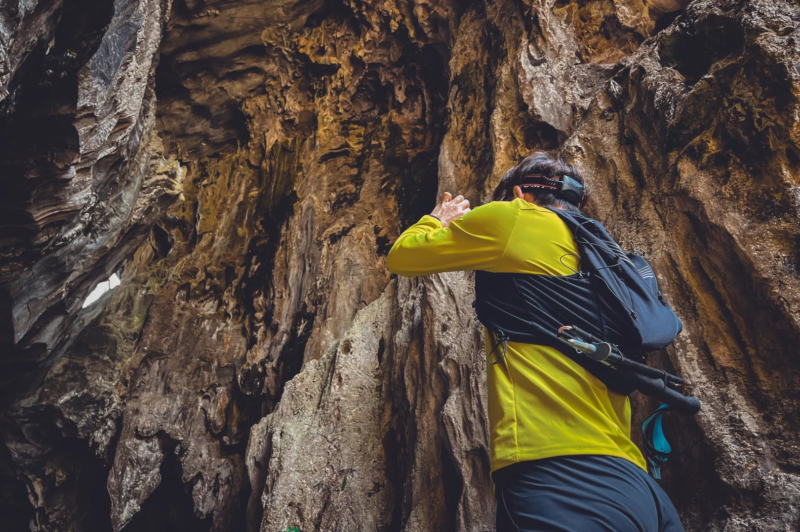

概览
Lion-Elephant Rock · Guangzhou's oldest human settlement
历史地位
位于广州市从化区吕田镇狮象村，是广州地区目前发现最早的远古人类遗址，距今约 7000 年。2008 年 12 月公布为广州市第七批文物保护单位。
核心看点
一座天然石灰岩山体，因形似狮、象得名；既是新石器时代人类的家园，更是国内罕见的多时代文化并存的史前遗迹——战国、汉、唐文物与新石器遗存在此层叠交织。
游览信息
门票：免费（未开发，无售票）。开放：全天（建议白天）。交通：自驾导航「从化区吕田镇狮象村」。洞体未开发，探洞务必结伴并备照明。



狮象岩山体与洞口 · 小红书 @Almond / @银林生态社区
一句话读懂狮象岩
七千年文明星火在此层叠交织——从上层的战国、汉代、唐代文物到下层的新石器时代遗存，这里从未真正被人类离开过。如今它正以「古人类遗址文旅产业园」的蓝图焕发新生。